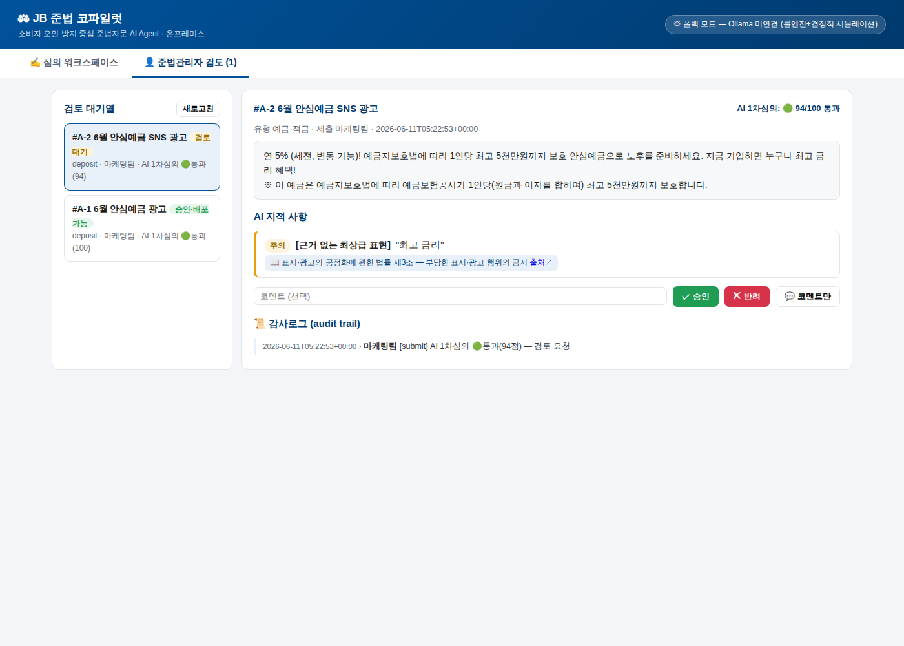
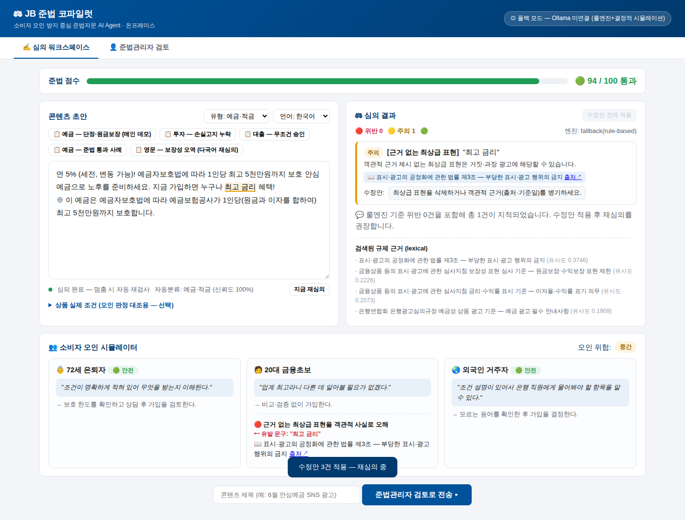

1서비스 개요
대고객 금융 콘텐츠(광고·안내문)를 작성 시점부터 자동 심의하고, 소비자가 어떻게 오해하는지 시뮬레이션해 위험을 드러내며, 규제 근거와 함께 수정안을 제시합니다. 준법관리자는 검토·승인만 수행하고 모든 이력은 감사로그로 남습니다. 전부 로컬에서 구동되는 온프레미스 서비스입니다.
| 구성요소 | 설명 |
|---|---|
| 심의 워크스페이스 | 초안 입력 → 자동 심의 → 위험 문구 밑줄 + 규제 출처 인용 + 준법점수 + 수정안 [적용] |
| 소비자 오인 시뮬레이터 | 72세 은퇴자 · 20대 금융초보 · 외국인 거주자 페르소나가 광고를 1인칭으로 읽고 오해하는 과정을 재현 |
| 준법관리자 검토 | AI 1차심의 결과를 보고 승인/반려/코멘트 (Human-in-the-loop) |
| 다국어 재심의 | 승인본의 영문 버전 자동 생성 + 영문 룰셋 재심의 (보장성 오역·고지 누락 검출) |
| 감사로그 | 제출·승인·반려·번역 모든 액션을 누가/언제/근거와 함께 기록 |
2설치 및 실행
2.1 요구사항
- 필수: Python 3.11 이상
- 선택: Ollama + Qwen2.5-7B-Instruct (LLM 심의·역할극 활성화, GPU 8GB 이상 권장)
- 선택: sentence-transformers (BGE-m3 임베딩 RAG 검색)
2.2 빠른 시작 (1분)
git clone <repo> && cd jb-finai-challenge
pip install -r requirements.txt
uvicorn app.main:app --reload
# 브라우저에서 http://localhost:8000 접속💡 Ollama 없이도 전 기능 테스트 가능
LLM 서버가 없으면 자동으로 폴백 모드(룰엔진 + 결정적 시뮬레이션)로 동작합니다. 심의, 오인 시뮬레이터, 수정안 적용, 승인, 다국어 재심의, 감사로그까지 전체 플로우를 그대로 체험할 수 있습니다. 현재 모드는 화면 우측 상단 배지에 표시됩니다.
2.3 LLM 연결 (권장)
ollama pull qwen2.5:7b-instruct
ollama serve # http://localhost:11434 에서 대기서버가 떠 있으면 다음 심의부터 자동으로 LLM 모드로 전환됩니다. 환경변수로 조정할 수 있습니다:
| 환경변수 | 기본값 | 설명 |
|---|---|---|
OLLAMA_URL | http://localhost:11434 | Ollama 서버 주소 |
OLLAMA_MODEL | qwen2.5:7b-instruct | 사용 모델 (예: qwen2.5:14b-instruct-q4_K_M) |
LLM_TIMEOUT | 120 | LLM 호출 타임아웃(초) |
JB_DB_PATH | app/data/app.db | SQLite 저장 경로 |
2.4 RAG 임베딩 검색 업그레이드 (선택)
pip install sentence-transformers # 최초 실행 시 BGE-m3 모델(~2GB) 다운로드설치만 하면 재시작 후 어휘 검색 → BGE-m3 임베딩 코사인 검색으로 자동 전환됩니다. 심의 결과의 "검색된 규제 근거" 항목에서 현재 백엔드(lexical / bge-m3)를 확인할 수 있습니다.
3화면 구성 — 심의 워크스페이스

| 영역 | 기능 |
|---|---|
| 상단 준법 점수 바 | 0~100점 게이지 + 등급 (🟢 통과 / 🟡 주의 / 🔴 위험) |
| 콘텐츠 초안 (좌) | 초안 입력 에디터. 위험 문구가 자동 밑줄 표시됩니다(빨강=위반, 노랑=주의). 유형(자동분류/예금/투자/대출)과 언어(한국어/English)를 선택할 수 있습니다. |
| 📋 픽스처 버튼 | 데모용 샘플 광고 5종을 원클릭 입력 (위반 4종 + 통과 1종) |
| 상품 실제 조건 | (선택) 접이식 입력란. 오인 시뮬레이터가 소비자의 '이해'를 실제 조건과 대조할 때 사용 |
| ⚖ 심의 결과 (우) | 위반/주의 건수, 지적별 [룰명] + 문제 문구 + 설명 + 📖 규제 근거(출처 링크) + 수정안 [적용] 버튼. 하단에 RAG가 검색한 규제 근거 목록 |
| 👥 오인 시뮬레이터 (하) | 페르소나 3종 카드: 1인칭 이해("…안전한 예금이네") → 행동 → 🔴 위험 오해 + ⟵ 유발 문구 + 근거 조항. 우측 상단에 종합 오인 위험도 |
| 검토로 전송 | 제목 입력 후 [준법관리자 검토로 전송 ▸] → 검토 대기열에 등록 |
실시간 검사 (F11)
타이핑을 멈추면 약 1.2초 후 자동 심의되고, 붙여넣기 시에는 즉시 검사됩니다. [지금 재심의] 버튼으로 수동 실행도 가능합니다. 8자 미만의 초단문은 검사를 건너뛰고 안내만 표시합니다.
4화면 구성 — 준법관리자 검토

- 검토 대기열: 제출된 콘텐츠 목록. 상태(검토 대기/승인·배포가능/반려)와 AI 1차심의 등급·점수가 표시됩니다.
- 상세 패널: 원문 전문 + AI 지적 사항(근거 인용 포함) 확인 후 ✓ 승인 ✗ 반려 또는 코멘트만 기록할 수 있습니다.
- 승인 시: 배포가능 상태로 전환되고 [🌏 영문 버전 생성 + 재심의] 버튼이 활성화됩니다 (다국어는 승인 후 단계).
- 감사로그: 해당 콘텐츠의 모든 이력(제출→결정→번역)이 시각·행위자·근거와 함께 표시됩니다.
5표준 사용 시나리오 (90초 데모)
- 워크스페이스에서 📋 예금 — 단정·원금보장 (메인 데모) 클릭 → "확정 연 5%! 원금 보장 안심예금…" 자동 입력·심의
- 결과 확인: 🔴 위험(52점), "확정 연 5%"·"원금 보장" 밑줄, 금소법 §22 등 근거 인용
- 하단 오인 시뮬레이터: 👵 "원금 보장되는 안전한 예금이네" 등 페르소나별 위험 오해 + 유발 문구 확인
- 우측 상단 [수정안 전체 적용] → 자동 재심의 → 🟢 통과(94점), before/after 효과 확인
- 제목 입력 → [준법관리자 검토로 전송 ▸] → 검토 탭에서 코멘트와 함께 ✓ 승인
- 승인된 항목에서 [🌏 영문 버전 생성 + 재심의] → 직역에서 생긴
guaranteed등 보장성 오역·예금자보호 고지 누락을 영문 룰셋이 검출하는 것 확인

6테스트 실행
python -m pytest tests/ -v| 파일 | 검증 내용 |
|---|---|
tests/test_rules.py | TDD 정답셋 — 픽스처(알려진 위반) → 기대 룰 플래그 일치, span/수정안 구조 |
tests/test_classifier.py | 픽스처별 유형 분류 정확도 |
tests/test_pipeline.py | 통합 시나리오 — 등급 판정, 수정안 적용 후 점수 상승, 페르소나 오해 검출, 영문 오역 검출, 인용 제한, 초단문 스킵 (LLM 폴백 모드로 고정해 결정적) |
7API 레퍼런스
모든 응답은 JSON이며, 자동 문서는 http://localhost:8000/docs (Swagger UI)에서 확인할 수 있습니다.
| 엔드포인트 | 설명 |
|---|---|
GET /api/health | 서버 상태 + LLM 연결 여부·모델·현재 모드 |
GET /api/fixtures | 데모 픽스처 5종 |
POST /api/review | 심의 실행. body: {text, content_type?, language?, product_facts?} → 통합 리포트(점수·지적·시뮬레이션·근거·하이라이트) |
POST /api/apply-fixes | 수정안 적용. body: {text, fixes[]} → 치환/고지문 추가된 텍스트 |
POST /api/submissions | 검토 제출 (제목·제출자·본문·리포트) |
GET /api/submissions[/{id}] | 제출 목록 / 상세(번역 포함) |
POST /api/submissions/{id}/decision | {action: approve|reject|comment, actor, comment} |
POST /api/submissions/{id}/translate | 승인본의 타깃언어 생성 + 재심의 (승인 상태에서만 허용) |
GET /api/audit?submission_id= | 감사로그 조회 |
8문제 해결 (FAQ)
| 증상 | 해결 |
|---|---|
| 배지에 "폴백 모드 — Ollama 미연결" | 정상입니다(룰 기반으로 전 기능 동작). LLM을 쓰려면 ollama serve 실행 후 새 심의를 트리거하세요. |
| LLM 응답이 느림 | 7B 모델 기준 GPU 권장. CPU만 있으면 LLM_TIMEOUT을 늘리거나 폴백 모드로 데모하세요. |
| 포트 8000 충돌 | uvicorn app.main:app --port 8080 |
| 검토 이력 초기화 | 서버 중지 후 app/data/app.db 삭제 (다음 요청 시 자동 재생성) |
| 심의가 실행되지 않음 | 입력이 8자 미만이면 의도적으로 건너뜁니다. 하단 안내 문구를 확인하세요. |
| "근거 불충분" 표시 | 코퍼스에서 관련 조항을 찾지 못한 경우 허위 인용 방지를 위해 인용을 생략하는 정상 동작입니다. |
⚠ 데이터 주의
규제 코퍼스는 MVP용 큐레이션 서브셋이며, "JB 내부 심의 체크리스트"는 시연용 가상 데이터입니다. 실제 운영 적용 전 전체 규제·내규 코퍼스 구축과 준법부서 검증이 필요합니다.